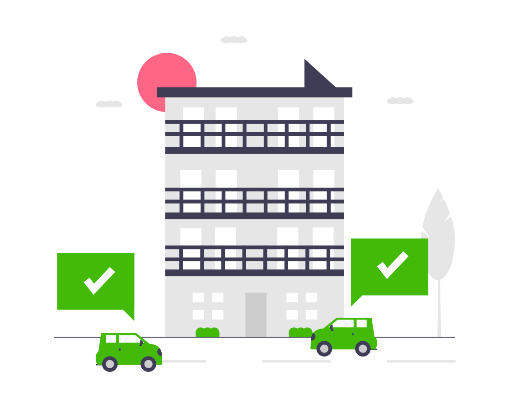

TRANSPORTATIONAdministration Department
TRANSPORTATIONAdministration Department
TRANSPORTATIONAdministration Department
TRANSPORTATIONAdministration Department
The TranspoFile is a system or page created for the monitoring of Transpo records such as, inventory, materials withdrawal, vehicle/s status and details, PMS and Fuel. This can be accessed exclusively by Transpo team, Admin Manager and Admin Assistant Manager. This page is secured with the user name and password, to guarantee the confidentiality of all the records and files. This page is purposely created to have a systematic and a technology adopt record monitoring, where in updating of records is simplified and made easy.
.png)
Migration of warehouse storage inventory record from manual to this system or page started last January 2021. Transpo Team not only updated and upgraded the warehouse inventory monitoring records, but also the physical condition of the Warehouse/storage. Inside the storage area or warehouse all items were labeled accordingly, such as tire/s, electrical parts/spare parts, engine oils and the likes. In the new warehouse/storage inventory system, we can view, update, edit and save records.
All vehicles under administration is managed and monitored by the Transpo Team. We ensure the worthiness of the vehicle/s, thus it all be checked before and after the utilization thru the supervision of the assigned truck master. The PMS of all vehicles are also arranged and managed by the Traspo Team, and it is our top most priority. Anything that needs to be repaired and replaced should be prioritized.
All vehicles are equipped with the dash camera, to ensure that travels are captured and recorded. This can also help to find out what happened if there is an incident. Aside from the dash camera, a GPS is also installed in each of the vehicles, as the management is strictly imposing the no over speeding policy. All drivers should follow the allowable speed set by the company.
Under this link, we can view the activities related to the operations and safety of the manpower agency, the provider of Admin drivers, the SCF. Along with the different activities, it is also saved here the vehicle monitoring records. Traspo Group is monitoring all of the vehicles travelling outside the plant site daily, and all records can be seen and view here.
Twice in every year, the company is conducting the maintenance shut down activity, the minor and the major shutdown. In connection with the activity, Transpo Group is task for the mobilization and demobilization of the shut downers, contractors and vendors who are involved in the shutdown activity. Mobilizing and demobilizing these people has become challenging and not easy, during the start of the pandemic. The company has to religiously abide with the protocols and procedure set by the government to ensure the safety of each and every individual.